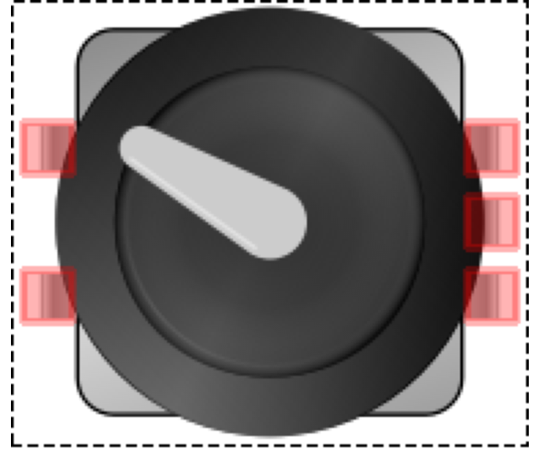

The following are the parts for this lab.
|  |
One (1) rotary encoder. |
Wiring
Program
//these pins can not be changed 2/3 are special pins
int encoderPin1 = 2;
int encoderPin2 = 3;
volatile int lastEncoded = 0;
volatile long encoderValue = 0;
long lastencoderValue = 0;
int lastMSB = 0;
int lastLSB = 0;
void setup() {
Serial.begin (9600);
pinMode(encoderPin1, INPUT);
pinMode(encoderPin2, INPUT);
digitalWrite(encoderPin1, HIGH); //turn pullup resistor on
digitalWrite(encoderPin2, HIGH); //turn pullup resistor on
//call updateEncoder() when any high/low changed seen
//on interrupt 0 (pin 2), or interrupt 1 (pin 3)
attachInterrupt(0, updateEncoder, CHANGE);
attachInterrupt(1, updateEncoder, CHANGE);
}
void loop(){
//Do stuff here
Serial.println(encoderValue);
delay(1000); //just here to slow down the output, and show it will work even during a delay
}
void updateEncoder(){
int MSB = digitalRead(encoderPin1); //MSB = most significant bit
int LSB = digitalRead(encoderPin2); //LSB = least significant bit
int encoded = (MSB << 1) |LSB; //converting the 2 pin value to single number
int sum = (lastEncoded << 2) | encoded; //adding it to the previous encoded value
if(sum == 0b1101 || sum == 0b0100 || sum == 0b0010 || sum == 0b1011) encoderValue ++;
if(sum == 0b1110 || sum == 0b0111 || sum == 0b0001 || sum == 0b1000) encoderValue --;
lastEncoded = encoded; //store this value for next time
}
Not Working?
Program not uploaded
Make sure the proper serial port is selected. Select the serial port in the Arduino IDE menu tools > serial port.
Encoder not seated
The rotary encoder may not be seated properly in the breadboard. If this occurs, it will not make a connection to the jumper wires. Check to make sure that the sensor is pushed firmly into the breadboard.
Going Further
Brightnen and Dim an LED
Add an LED to your circuit and have the program change its brighness as the encoder value increases. Dim the LED when the encoder value decreases.
Add Sound
Add a speaker to your circuit and have the program increase or decrease the volume based on the direction fo the rotary encoder.